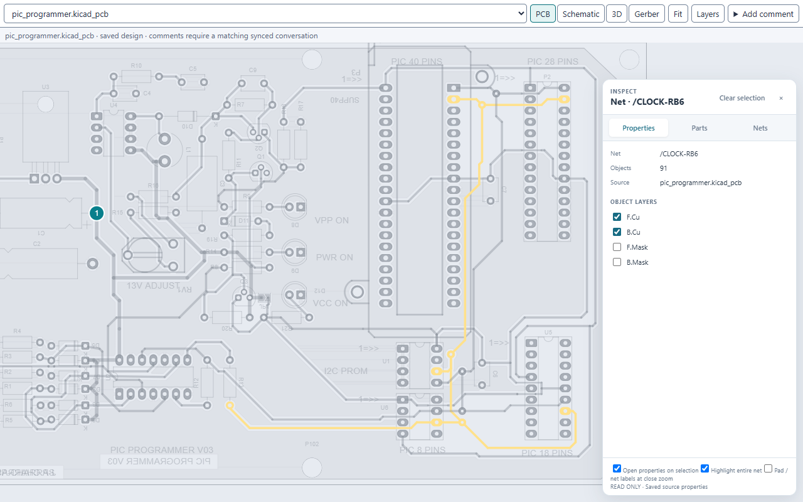
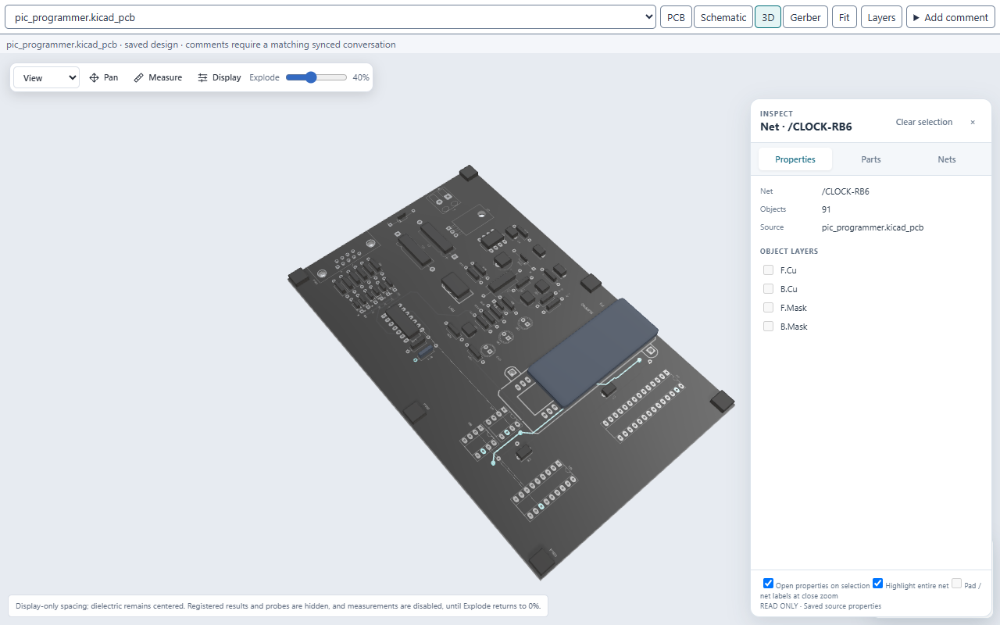
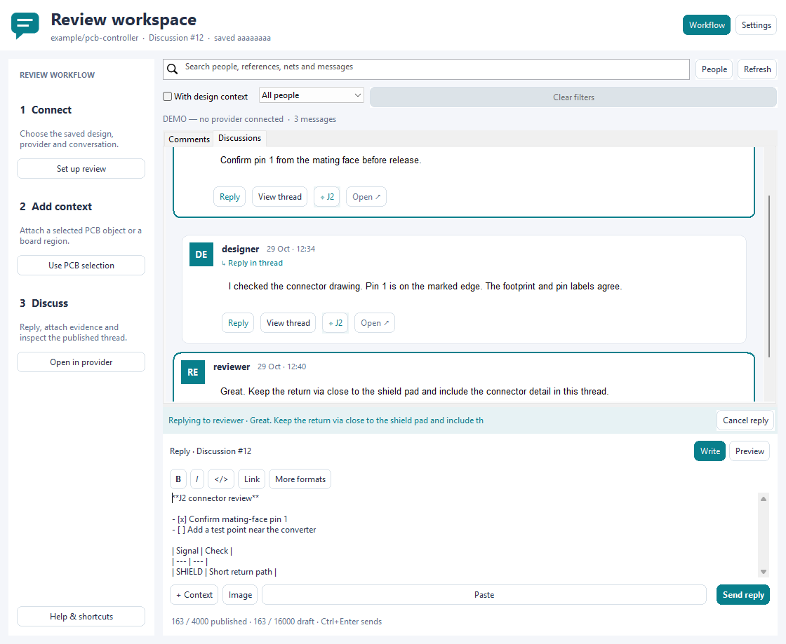
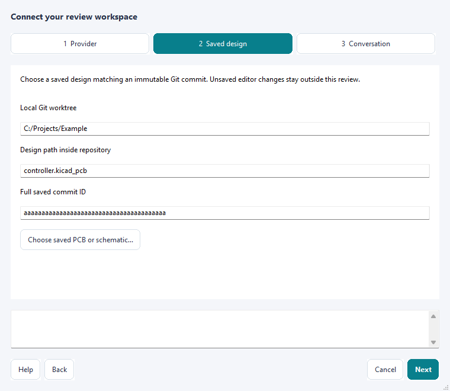

Introduced in 4.8.3: the independently bundled official KiCad WebView 0.6.0 distribution, public saved-selection/camera controls, deferred pane setup and stale/closed-load guards. MPL and dependency notices remain packaged. Exploded geometry cannot carry assembled-position comment markers. These local checks do not establish live-provider acceptance, all-OS native support or KiCad 11 qualification.
Read engineering conversations as individual messages, with a Reply action on each card. Settings and authentication stay outside the feed. Comments uses the chosen issue/PR/MR conversation; Discussions uses real GitHub Discussions.
The Light/Dark switch applies to the native window and embedded viewer. Disabled actions retain readable labels, controls have distinct borders and keyboard-focus outlines, and sign-in fields keep their labels visible. Composer updates and theme changes preserve drafts and field values.
The 4.5.0 testing package adds BOM for saved field-value rows and cells, and Gerbers… for project-local files with Load/Generate actions. Choose a row/cell or Gerber pin/region, write a message and send explicitly. The variant selector sets comment context; it does not calculate effective variant inheritance or change geometry. Replies use one indentation level.
Changed and orphan contexts are highlighted without moving the original anchor. Settings controls append-only provider status updates after two stable observations and fresh preflight. A failed read is not deletion. Local working-tree observations name a HEAD baseline rather than claiming a committed deletion. Uncertain writes pause automatic status publication; check the provider before reconnecting. See the full reference for bounds and limitations. The live KiCad 10/11 and GitLab acceptance matrix remains incomplete; see VALIDATION.md.
Review 4.5.0 testing: the embedded KiView pane and direct desktop browser sign-in are included. The final Windows source window and light/dark themes have passed visual checks with a saved KiCad 10 fixture and illustrative local comments; GitHub sign-in and partial sync were verified in KiCad 10, but the full live-provider and native-editor matrix remains incomplete. Current source bundles unmodified KiCad WebView 0.6.0 full ESM with its MPL-2.0 and dependency notices. No separate asset setup or download is needed. Explicit overrides remain available through WAYRICAD_REVIEW_VIEWER_ROOT or Viewer assets…; choose the pinned package root or complete dist directory, including notices. See the offline visual user guide for setup and an illustrated tour.
PCB and schematic comment focus preserves zoom and flip using the public camera API. Object focus uses exact saved UUIDs. Source changes revoke marker authority until the new load completes; superseded loads and view switches are cancelled. Draft points and regions in 2D. Review overlays are hidden in exploded 3D until explode returns to zero, because saved XY anchors have no verified registration to the displaced layers. This does not change or publish any comment.


Browser-pane captures of the public KiCad 10 PIC programmer demo with an explicit local host stub and one unpublished illustrative marker, not a native wx window, live provider session or live KiCad connection. See capture provenance.Choose Sign in in the header, then Sign in browser. Approve the provider's device-code request and return to Review. No CLI installation or token paste is needed for current-source desktop use. GitHub defaults to public repositories plus Discussions write access; the optional private-repository checkbox requests broader repo write access. GitLab needs an OAuth application with device grant enabled; a self-hosted server needs a public client ID in WAYRICAD_REVIEW_GITLAB_CLIENT_ID.
Review keeps its access token in process memory for at most eight hours, or less if the provider token expires sooner. Activity does not extend this time; closing Review loses sign-in. There is no silent renewal or CLI fallback. Expiry blocks reads, sending, uploads and native navigation, clears canvas comment authority and preserves drafts. More → Sign out affects Review only, leaving browser, extension and shared CLI sessions alone. The separate CLI commands still use their legacy gh/glab authentication.
The header has one Light/Dark toggle and an Account action. More holds settings, refresh, reviewer highlights, workflow, sign-out and design visibility. Filters and PCB layers start collapsed. The theme applies to the window and embedded viewer.
Use Open project/design… to choose a saved PCB or schematic. The file selector includes its paired design and schematic hierarchy files. Navigate independently with pan, zoom, fit and PCB layer controls; switch a PCB to 3D. The current document catalog supplies no component model assets, so 3D uses stand-ins where models are needed. STEP models are outside this integration. The view does not mirror unsaved KiCad edits; edit designs in the main KiCad window.
After Review this file connects the exact saved file and a matching provider refresh succeeds, use Pin comment or Region comment in the 2D view. Markers are local drafts until you explicitly send a message. Provider-read scope and the saved-file SHA-256 govern markers and posting. Selecting a marker focuses its thread; object-linked PCB comments can request navigation in the originating editor. Native schematic selection and native KiCad canvas overlays are unavailable.
The source preview serves its allowlisted viewer assets from memory through a temporary loopback listener. It closes with Review and has no fixed port or background service.
Actual native source window with illustrative comments; no provider or live editor connected.

Discussions reads every supported comment/reply page through GraphQL and posts native threaded replies. Replies to replies remain in their top-level Discussion thread. GitLab notes remain under Comments.

Settings guides you through Provider, Saved design and Conversation. Choose a saved design to detect its Git context. Current-source desktop sign-in opens the provider's device-code page; copy the one-time code if needed. No CLI session is changed. Connected requires a successful provider account check.
The formatting toolbar supports bold, italic, headings, code, lists, tasks, quotes, HTTPS links and tables. Ctrl+B / Ctrl+I / Ctrl+K format selections; Ctrl+Enter sends. Pasted HTML becomes safe Markdown. Preview renders locally without scripts, remote images or automatic link navigation.
Use More → Workflow guide to show the sidebar and drag the horizontal divider to resize the composer. Drafts retain up to 16000 characters; messages allow 4000 including generated links/reply text. Overlong drafts are preserved locally.
Paste images with Ctrl+V, use More → Attach image… or drop PNG/JPEG files onto the composer. Up to four files, each at most 4 MiB and 16 megapixels, are accepted. Each GitLab upload has an approval preview; upload copies become PNG at most 1024 pixels per side. Pending attachments have removable chips and local thumbnails. GitHub attachments use its browser editor.

Earlier native source capture showing a local draft pin; controls predate the compact toolbar. No provider upload or send is represented.
| Control | Use |
|---|---|
| Attach location… | Attach a component, BOM row/cell, Gerber file or point/region to your draft. Nothing is published until Send. Native object UUIDs must exist in the saved revision. Clear the location from the same menu. |
| Design-item chip | Locate the provider-anchored PCB object in the originating editor. No shapes are inserted or saved. |
| Attach image / Ctrl+V / drop | GitLab: paste a clipboard image, inspect the preview, approve upload and send its reference. Images are normalized to at most 1024 pixels per side. A screenshot chip removes it from the pending message. GitHub: attach using its browser editor, then refresh here. |
| Reply | Opens a compact inline reply banner. Quote reply appends the selected comment as an undoable Markdown quote while keeping existing draft text. Reply headers name the sender and immediate recipient; all replies use one indentation level. Cancel returns to a new message without deleting your text. |
View thread focuses a message and its replies. All messages returns to the feed without changing your draft or pending reply. Search is scoped to the open thread; combine it with the author chooser and With design context. Clear filters resets search and filters while keeping the thread and draft. People highlights authors without hiding other messages. A removed thread returns to the surviving feed after refresh.
Message actions wrap on narrow cards. The guided sidebar initially folds in small windows; an explicit Workflow choice is retained while the pane is open. More formats expands headings, lists, tasks, quotes, tables and fenced code without crowding the main toolbar. Write and Preview identify the current composer view; the send action identifies a new message or reply. The published-character estimate includes generated reply and image links.
| Shortcut | Action |
|---|---|
| Ctrl+F | Focus search. |
| Ctrl+Shift+P | Switch Write / Preview locally. |
| Ctrl+B / Ctrl+I / Ctrl+K | Bold / italic / HTTPS link. |
| Ctrl+Enter | Send explicitly to the active provider conversation. |
| Escape | Return to Write, cancel a reply, leave thread focus, then clear filters, one step at a time. Draft text is retained. |
Active panes refresh about every eight seconds, backing off to two minutes after failures. Hidden/inactive panes pause. The feed builds at most 80 cards at once and preserves reading position. Participants are observed authors, not online presence or typing indicators.
Local data is an optional cache plus separate unpublished drafts. It never establishes publication. Failed reads stay visibly stale. Conversation changes preserve the outgoing draft and pause editing until the destination is ready. Ambiguous write failures retain text: refresh and inspect the provider before retrying. Writes are never automatically retried.
Saved bytes must match the chosen commit apart from normal LF/CRLF checkout conversion. Exact local-byte hashes protect later operations; unsaved live geometry is outside this review. Native schematic selection, native KiCad canvas overlays, inline PR diff reviews and review summaries are unsupported. GitHub Projects and GitLab boards open in provider UI.
Run python -m review_comments_plugin.cli --help. The post command previews unless --publish is supplied. Set kind: discussion and an existing Discussion number for the GraphQL backend.
Visual user guide · Full reference · Integration contract · Validation scope